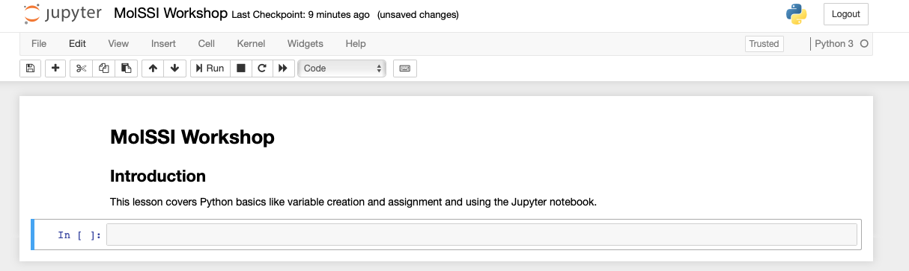

Introduction
Overview
Teaching: 20 min
Exercises: 10 minQuestions
What is the basic syntax of the python programming language?
Objectives
Assign values to variables.
Use the print function to check how the code is working.
Use multiple assignment to assign several variables at once.
Use a for loop to perform the same action on the items in a list.
Use the append function to create new lists in for loops.
Getting Started
Python is a computer programming language that has become ubiquitous in scientific programming. Our initial lessons will run python interactively through a python interpreter. We will first use a Jupyter notebook. The [setup] page should have provided information on how to install and start a Jupyter notebook. Everything included in a code block is something you could type into your python interpreter and evaluate.
Setting up your Jupyter notebooks
In the [setup], you learned how to start a Jupyter notebook. Now, we will use the notebook to execute Python code. Jupyter notebooks are divided into cells. You run a jupyter notebook one cell at a time. To execute a cell, click inside the cell and press shift+enter.
In the upper left corner, click where it says “Untitled” and change the name to “MolSSI Workshop”. We have now changed the name of the Jupyter Notebook.
Jupyter notebooks allow us to also use something called markdown in some cells. We can use markdown to write descriptions about our notebooks for others to read. It’s a good practice to have your first cell be markdown to explain the purpose of the notebook. Let’s do that in our first cell. Click inside the first cell, then on the top of the screen select Cell->Cell Type->Markdown (shown below).

Now, return to the cell and type the following:
# MolSSI Workshop
## Introduction
This lesson covers Python basics like variable creation and assignment and using the Jupyter notebook
In Markdown, we create headers using a single # sign. Using two (##) creates a subheader. After typing this into a cell, press shift+enter to evaluate. Now your notebook should look like the following.

Now that our notebook is set-up, we’re ready to start learning some Python!
Assigning variables and data types
Any python interpreter can work just like a calculator. This is not very useful. Type the following into the next cell of your jupyter notebook.
3+7
10
Here, Python has performed a calculation for us. To save this value, or other values, we assign them to a variable for later use. The syntax for assigning variables is the following:
variable_name = variable_value
Let’s see this in action with a calculation. Type the following into the next cell of your Jupyter notebook.
deltaH = -541.5 #kJ/mole
deltaS = 10.4 #kJ/(mole K)
temp = 298 #Kelvin
deltaG = deltaH - temp*deltaS
Notice several things about this code. The lines that begin with # are comment lines. The computer does not do anything with these comments. They have been used here to remind the user what units each of their values are in. Comments are also often used to explain what the code is doing, or leave information for future people who might use the code.
When choosing variable names, you should choose informative names so that someone reading your code can tell what they represent. Naming a variable temp or temperature is much more informative than naming that variable t.
We can now access any of the variables from other cells. Let’s print the value that we calculated. In the next cell,
print(deltaG)
-3640.7000000000003
In the previous code block, we introduced the print() function. Often, we will use the print function just to make sure our code is working correctly.
Python can do what is called multiple assignment where you assign several variables their values on one line of code. The following code block does the exact same thing as the previous code block.
#I can assign all these variables at once
deltaH, deltaS, temp = -541.5, 10.4, 298
deltaG = deltaH - temp*deltaS
print(deltaG)
-3640.7000000000003
Each variable is some particular type of data. The most common types of data are strings (str), integers (int), and floating point numbers (float). You can identify the data type of any variable with the function type(variable_name).
type(deltaG)
float
You can change the data type of a variable like this. This is called casting.
deltaG_string = str(deltaG)
type(deltaG_string)
str
Lists and Slices
Another common data structure in python is the list. Lists can be used to group several values or variables together, and are declared using square brackets [ ]. List values are separated by commas. Python has several built in functions which can be used on lists. The built-in function len can be used to determine the length of a list. This code block also demonstrates how to print multiple variables.
# This is a list
energy_kcal = [-13.4, -2.7, 5.4, 42.1]
# I can determine its length
energy_length = len(energy_kcal)
# print the list length
print('The length of this list is', energy_length)
The length of this list is 4
If I want to operate on a particular element of the list, you use the list name and then put in brackets which element of the list you want. In python counting starts at zero. So the first element of the list is list[0]
# Print the first element of the list
print(energy_kcal[0])
-13.4
You can use an element of a list as a variable in a calculation.
# Convert the second list element to kilojoules.
energy_kilojoules = energy_kcal[1]*4.184
print(energy_kilojoules)
-11.296800000000001
Sometimes you will want to make a new list that is a subset of an existing list. For example, we might want to make a new list that is just the first few elements of our previous list. This is called a slice. The general syntax is
new_list = list_name[start:end]
When taking a slice, it is very important to remember how counting works in python. Remember that counting starts at zero so the first element of a list is list_name[0]. When you specify the last element for the slice, it goes up to but not including that element of the list. So a slice like
short_list = energy_kcal[0:2]
includes energy_kcal[0] and energy_kcal[1] but not energy_kcal[2].
print(short_list)
[-13.4, -2.7]
If you do not include a start index, the slice automatically starts at list_name[0]. If you do not include an end index, the slice automatically goes to the end of the list.
Check your Understanding
What does the following code print?
slice1 = energy_kcal[1:] slice2 = energy_kcal[:3] print('slice1 is', slice1) print('slice2 is', slice2)Answer
slice1 is [-2.7, 5.4, 42.1] slice2 is [-13.4, -2.7, 5.4]
Repeating an operation many times: for loops
Often, you will want to do something to every element of a list. The structure
to do this is called a for loop. The general structure of a for loop is
for variable in list:
do things using variable
Indentation is very important in python. There is nothing like an end or exit statement that tells you that you are finished with the loop. The indentation shows you what statements are in the loop. Let’s use a loop to change all of our energies in kcal to kJ.
for number in energy_kcal:
kJ = number*4.184
print(kJ)
-56.0656
-11.296800000000001
22.593600000000002
176.1464
Now it seems like we are really getting somewhere with our program! But it would be even better if instead of just printing the values, it saved them in a new list. To do this, we are going to use the append function. The append function adds a new item to the end of an existing list. The general form of the append function is
list_name.append(new_thing)
Try running this block of code. See if you can figure out why it doesn’t work.
for number in energy_kcal:
kJ = number*4.184
energy_kJ.append(kJ)
print(energy_kJ)
---------------------------------------------------------------------------
NameError Traceback (most recent call last)
<ipython-input-12-595146886489> in <module>()
2 for number in energy_kcal:
3 kJ = number*4.184
----> 4 energy_kJ.append(kJ)
5
6 print(energy_kJ)
NameError: name 'energy_kJ' is not defined
This code doesn’t work because on the first iteration of our loop, the list energy_kJ doesn’t exist. To make it work, we have to start the list outside of the loop. The list can be blank when we start it, but we have to start it.
energy_kJ = []
for number in energy_kcal:
kJ = number*4.184
energy_kJ.append(kJ)
print(energy_kJ)
[-56.0656, -12.1336, 22.593600000000002, 176.1464]
Making choices: logic Statements
Within your code, you may need to evaluate a variable and then do something if the variable has a particular value. This type of logic is handled by an if statement. In the following example, we only append the negative numbers to a new list.
negative_energy_kJ = []
for number in energy_kJ:
if number<0:
negative_energy_kJ.append(number)
print(negative_energy_kJ)
[-56.0656, -11.296800000000001]
Other logic operations include
- equal to
== - greater than
> - less than
< - greater than or equal to
>= - less than or equal to
<=
Exercise
The following list contains some floating point numbers and some numbers which have been saved as strings. Copy this list exactly into your code.
data_list = ['-12.5', 14.4, 8.1, '42']Set up a
forloop to go over each element ofdata_list. If the element is a string (str), recast it as a float. Save all of the numbers to a new list callednumber_list. Pay close attention to your indentation!Solution
data_list = ['-12.5', 14.4, 8.1, '42'] number_list = [] for item in data_list: if type(item) is str: item = float(item) number_list.append(item) print(number_list)
A note about jupyter notebooks
If you use the jupyter notebook for your python interpreter, the notebook only executes the current code block. This can have several unintended consequences. If you change a value and then go back and run an earlier code block, it will use the new value, not the first defined value, which may give you incorrect analysis. Similarly, if you open your jupyter notebook later, and try to run a code block in the middle, it may tell you that your variables are undefined, even though you can clearly see them defined in earlier code blocks. But if you didn’t re-run those code blocks, then python doesn’t know they exist.
Key Points
You can assign the values of several variables at once.
Indentation is very important in
forloops andifstatements. Don’t forget the:and to indent the items in the loop.